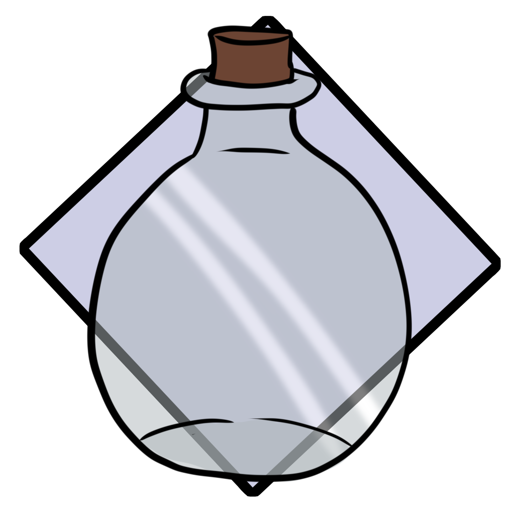

A flag used to mark dig locations.

An old glass bottle found completely intact.

Drace remains are common at ruins, making people wonder how much humans and Drace actually lived together in the past.
Archeologists work tirelessly to uncover the ancient civilizations to try to shed light on the world's current state.